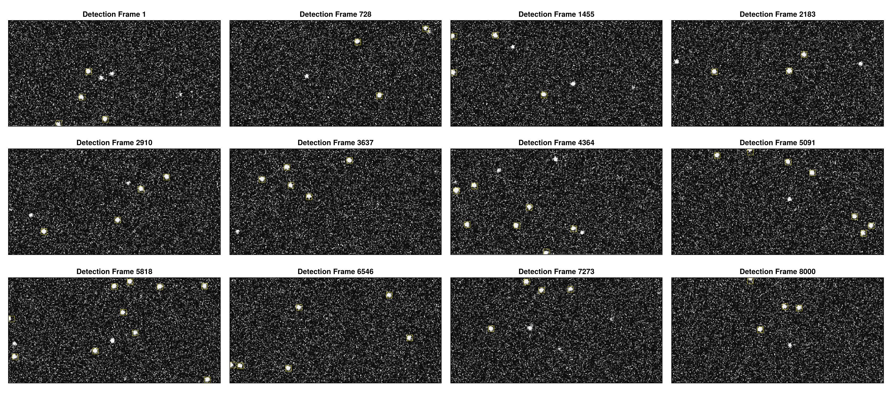
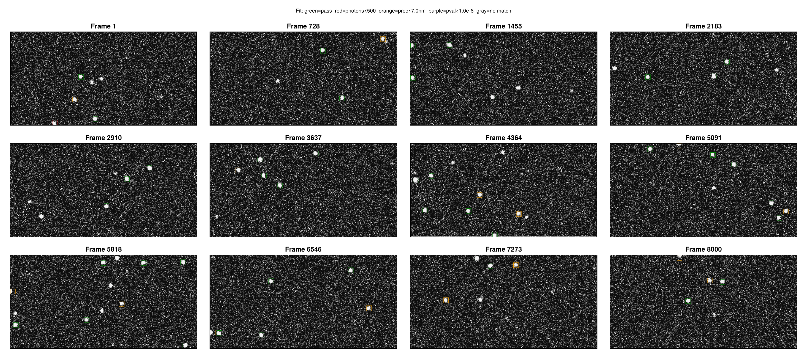
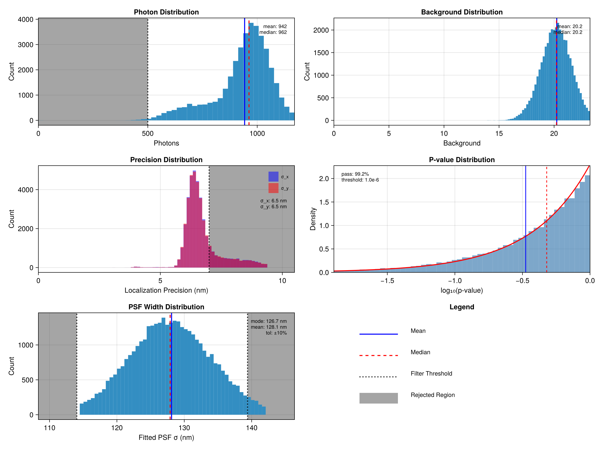
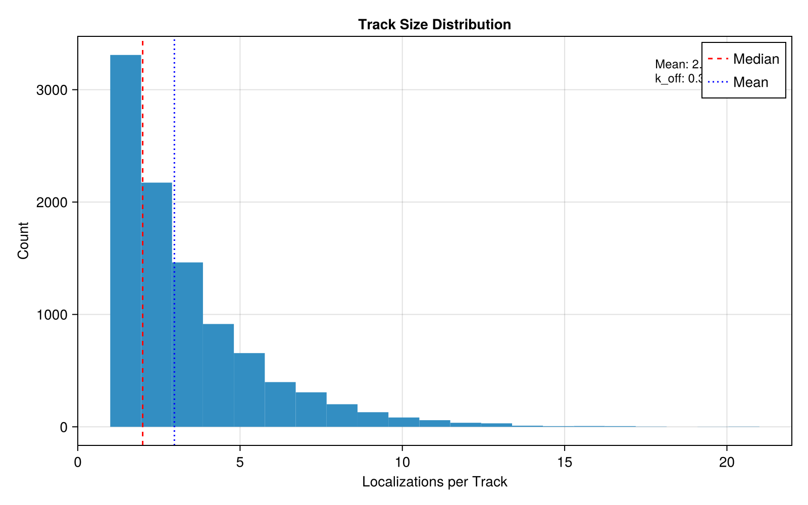
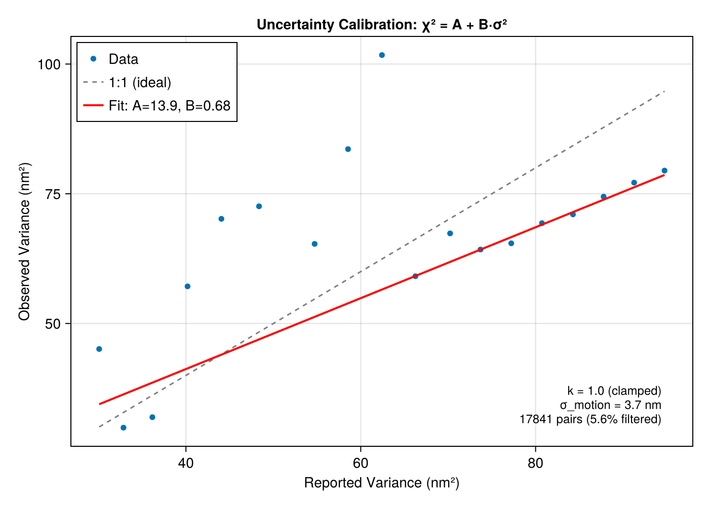
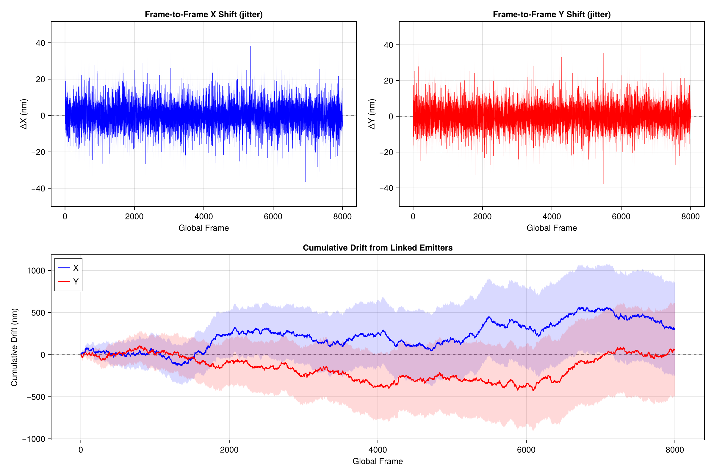
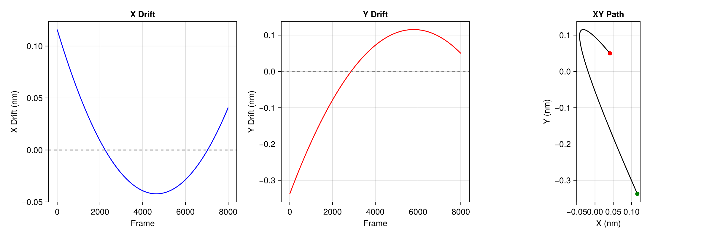
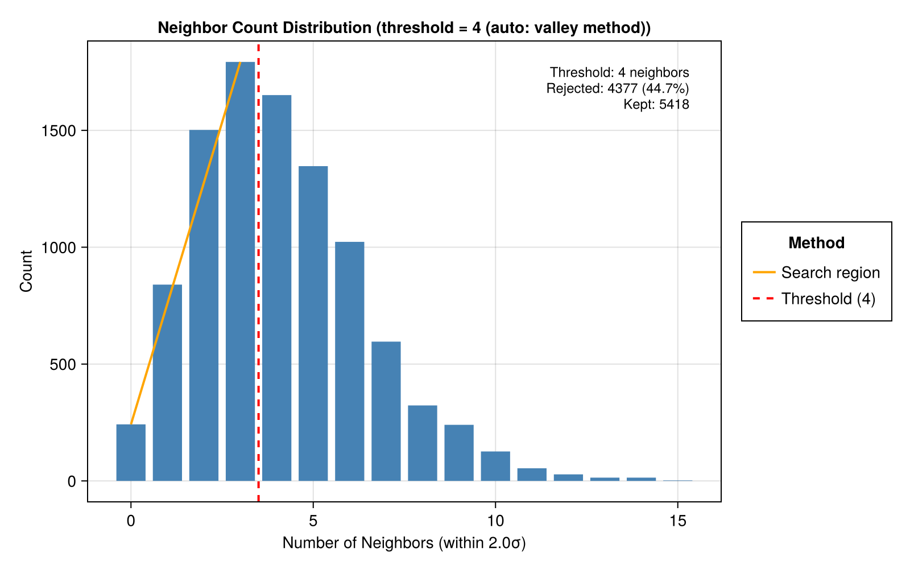
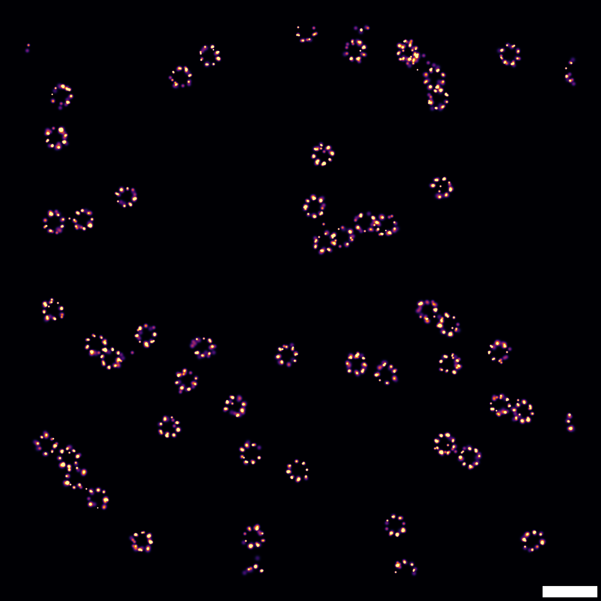
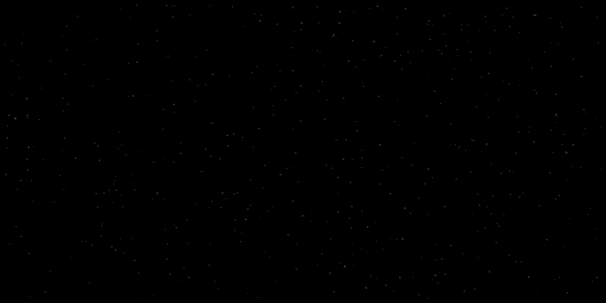

Tutorial
This walkthrough runs a complete SMLM analysis pipeline on simulated data, showing the output at every step. All figures are generated from the examples/analysis_example.jl and examples/stepwise_example.jl scripts.
Setup
using SMLMAnalysis
using MicroscopePSFs
# Camera: 256x128 pixels @ 100nm
camera = IdealCamera(256, 128, 0.1)
# Simulate: 4 datasets x 2000 frames, 8-mer pattern
sim_params = StaticSMLMConfig(density=2.0, sigma_psf=0.13, nframes=2000, ndatasets=4)
pattern = Nmer2D(n=8, d=0.05)
fluor = GenericFluor(photons=50000.0, k_off=20.0, k_on=0.02)
(_, sim_info) = simulate(sim_params; pattern=pattern, molecule=fluor, camera=camera)Image generation uses gen_images from SMLMSim with a Gaussian PSF model. See the example scripts for the full setup including the per-dataset image generation workaround.
AnalysisConfig Approach
The primary interface uses AnalysisConfig to define a complete pipeline:
config = AnalysisConfig(
camera = camera,
steps = [
DetectFitConfig(boxsize=7, psf_sigma=0.13, psf_model=:variable),
FilterConfig(photons=(500.0, Inf), precision=(0.0, 0.007), pvalue=(1e-3, 1.0)),
FrameConnectConfig(max_frame_gap=5),
DriftCorrectConfig(degree=2),
DensityFilterConfig(n_sigma=2.0),
RenderConfig(zoom=20, colormap=:inferno),
],
outdir = "output/",
verbose = Verbosity.STANDARD
)
# image_stacks is Vector{Array}: 4 datasets, each (height, width, 2000)
(result, info) = analyze(image_stacks, config)The analyze function returns (AnalysisResult, AnalysisInfo) following the JuliaSMLM tuple-pattern. Each step produces diagnostic outputs in the output directory.
Step 1: Detection + Fitting
DetectFitConfig combines ROI detection (SMLMBoxer) and MLE fitting (GaussMLE) into a single step. For multi-dataset data (Vector{Array}), each dataset is processed independently.
DetectFitConfig(
boxsize = 7, # ROI size in pixels
min_photons = 500.0, # Detection threshold
psf_sigma = 0.13, # Expected PSF width (um)
psf_model = :variable, # :fixed, :variable, or :anisotropic
)Dataset boundaries come from the data structure: Vector{Array} of length 4 = 4 datasets.
Detection overlay
Shows detected ROIs overlaid on raw camera frames. Yellow boxes mark each candidate molecule:

Fit overlay
Boxes colored by fit quality – green passes all filters, red fails photon threshold, orange fails precision, purple fails p-value:

Fit quality distributions
Histograms of photons, background, localization precision, p-value, and PSF width. Gray regions show what would be rejected by the specified filter thresholds:

Step 2: Filtering
FilterConfig applies quality-based filtering. All criteria use (min, max) tuples:
FilterConfig(
photons = (500.0, Inf), # Minimum 500 photons
precision = (0.0, 0.007), # Maximum 7nm precision
pvalue = (1e-3, 1.0), # Goodness-of-fit threshold
psf_sigma = :auto # Optional: mode +/- 10%
)The acceptance rate (typically 60-90% for well-optimized detection) is reported in the step summary.
Step 3: Frame Connection
FrameConnectConfig links localizations of the same emitter across consecutive frames. This step also performs uncertainty calibration, comparing reported CRLB uncertainties against observed frame-to-frame scatter.
FrameConnectConfig(
max_frame_gap = 5, # Allow gaps of up to 5 dark frames
max_sigma_dist = 5.0, # Spatial matching threshold
calibrate = true, # Run uncertainty calibration
clamp_k_to_one = true # Don't allow k < 1 (CRLB is theoretical lower bound)
)Track size distribution
Shows the number of localizations per track. The mean track length reflects blinking kinetics (k_off):

Uncertainty calibration
Compares reported variance (CRLB) against observed variance from frame-to-frame scatter. The fit gives A (motion variance in nm^2) and B (CRLB scale factor):

Drift jitter
Frame-to-frame position shifts estimated from linked emitters. Shows both instantaneous jitter and cumulative drift across all datasets:

Step 4: Drift Correction
DriftCorrectConfig corrects sample drift using entropy-based optimization from SMLMDriftCorrection.
DriftCorrectConfig(
degree = 2, # Polynomial degree
continuous = false, # Registered mode (multi-dataset)
quality = :singlepass # :singlepass or :iterative
)Drift trajectory
Shows the estimated X and Y drift over time and the XY path. For multi-dataset data, each dataset's trajectory is shown in a different color:

For details on continuous vs registered modes and chunking strategies, see the Guide.
Step 5: Density Filter
DensityFilterConfig removes isolated localizations that lack neighbors, which are likely false detections.
DensityFilterConfig(
n_sigma = 2.0, # Search radius in sigma units
min_neighbors = :auto # Auto-detect threshold via valley method
)Neighbor histogram
The valley between the isolated peak (low neighbors) and the clustered peak (high neighbors) determines the threshold:

Step 6: Render
RenderConfig generates super-resolution images using SMLMRender. Multiple renders can be added as separate pipeline steps.
# Gaussian blur rendering (publication quality)
RenderConfig(zoom=20, colormap=:inferno)
# Histogram binning colored by time
RenderConfig(strategy=HistogramRender(), zoom=10, colormap=:turbo, color_by=:absolute_frame)
# Circle rendering colored by time
RenderConfig(strategy=CircleRender(), zoom=50, colormap=:turbo, color_by=:absolute_frame)Gaussian render

Histogram render

Circle render

Step-by-Step Workflow
The analyze() dispatch enables iterative parameter tuning:
# Run detection + fitting (expensive step)
(smld, df_info) = analyze(image_stacks, DetectFitConfig(camera=camera, boxsize=7);
outdir="output/", step_number=1, verbose=Verbosity.STANDARD)
smld_raw = df_info.smld_raw
# Save for later resume
save_smld("output/after_detectfit.h5", smld)
# Try filter parameters
(smld_filtered, _) = analyze(smld, FilterConfig(photons=(500.0, Inf));
smld_raw=smld_raw, outdir="output/", step_number=2, verbose=Verbosity.STANDARD)
# Not happy? Try looser filter on same smld (no re-detection needed)
(smld_filtered, _) = analyze(smld, FilterConfig(photons=(300.0, Inf));
smld_raw=smld_raw)
# Continue pipeline
(smld_fc, fc_info) = analyze(smld_filtered, FrameConnectConfig(max_frame_gap=5))
(smld_dc, dc_info) = analyze(smld_fc, DriftCorrectConfig(degree=2))
(img, _) = analyze(smld_dc, RenderConfig(zoom=20, colormap=:inferno))
# Resume from saved checkpoint in new session
smld = load_smld("output/after_detectfit.h5")
(smld, _) = analyze(smld, FilterConfig(photons=(400.0, Inf)))Output Directory Structure
When outdir is set, each step writes to a numbered subdirectory:
output/
├── 01_detectfit/
│ ├── config.toml
│ ├── info.toml
│ ├── stats.md
│ ├── fit_quality.png
│ ├── detection_overlay.png
│ └── fit_overlay.png
├── 02_filter/
│ ├── config.toml
│ └── stats.md
├── 03_frameconnect/
│ ├── config.toml
│ ├── info.toml
│ ├── stats.md
│ ├── track_histogram.png
│ ├── uncertainty_calibration.png
│ └── drift_jitter.png
├── 04_driftcorrect/
│ ├── config.toml
│ ├── info.toml
│ ├── stats.md
│ └── drift_trajectory.png
├── 05_densityfilter/
│ ├── config.toml
│ ├── stats.md
│ └── neighbor_histogram.png
├── 06_render/
│ ├── config.toml
│ ├── info.toml
│ └── gaussianrender_inferno_20x.png
└── summary.md